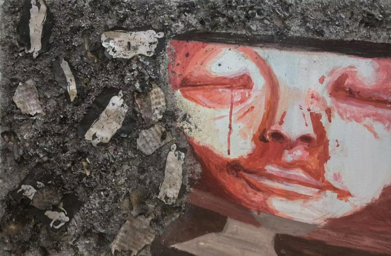

Allow Some Young People to Be the First to Worship Death
2026
Acrylic, ash, printed materials and mixed media on canvas
60 × 40 cm
A very noisy work of contemporary art.

2026
Acrylic, ash, printed materials and mixed media on canvas
60 × 40 cm
A very noisy work of contemporary art.